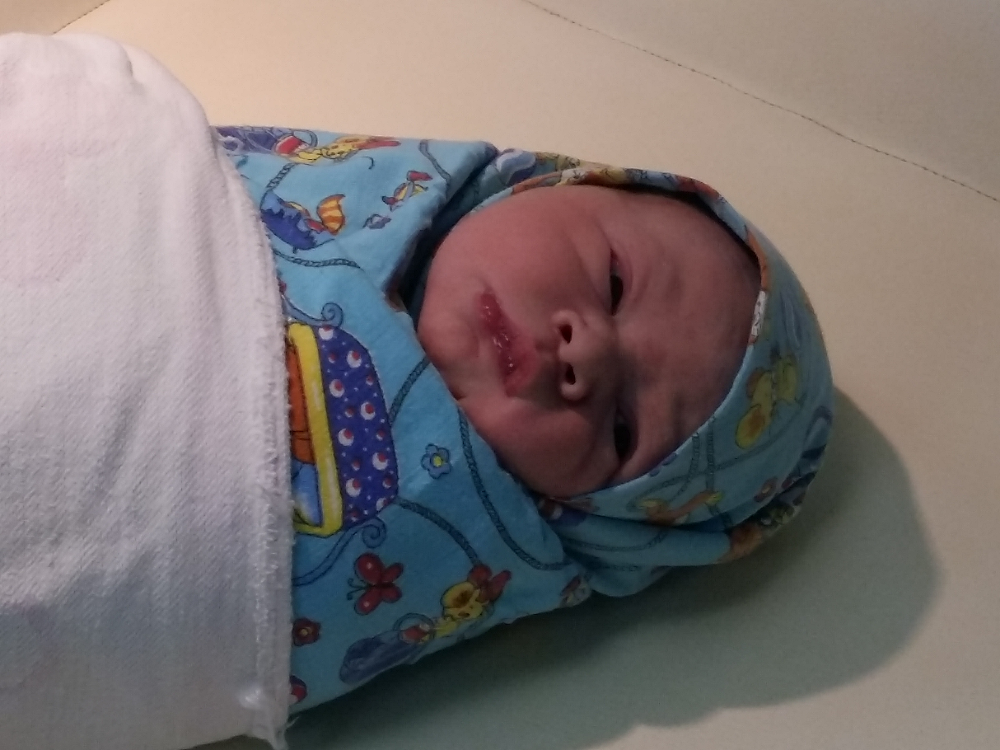

Прямо на осмотре у меня начали отходить воды. Пошла в палату собираться в родзал.
Наконец-то приехал Матвей! Его задержали на входе, потому что, оказывается, надо было брать с собой сменную одежду и обувь (о которых нам никто не говорил). В итоге ему дали тапочки 35 размера, в которых у него сильно болели ноги, и одежду, которая ему была мала. Матвей даже боялся садиться на стул, дабы не порвать штаны. С приездом Матвея жизнь наладилась. Мы с ним болтали, шутили, включили смотреть ВГТРК. А еще он делал мне массаж и прыгал меня на мячике.
21.03.2017
Первое, что врачи сказали о малыше, это то, что он головастик. Потом я услышала, как Львенок кряхтит. А потом и увидела, как его кладут на пеленальный столик.

Львенок родился в 21:24 Вес: 3640 г. Рост: 52 см.
22.03.2017
Пока лежала с капельницами, в палату вошла женщина с ребенком. Я сначала решила, что она перепутала палату, т.к. думала, что Львенок будет лежать в реанимации. Но это оказался Львенок! Его положили на кровать рядом со мной! Такой он маленький! Такой он миленький! И как я рада, что ему не надо больше лежать в реанимации!
Когда Матвей только зашел в палату, Львенок плакал у меня на руках. Он уже так долго плакал, что я не знала, что делать. А потом Матвей взял его на руки, и Львенок сразу затих. Ну вот, теперь мы знаем, кто будет утихомиривать его ночами.
23.03.2017
Пробовала сама умыть Львенка. Ему это не очень нравится.
Львенок так забавно спит. Спит, спит, потом проснется, что-нибудь закричит или руками замашет, и снова спит.
24.03.2017
К приходу Матвея немного надоила молока, а медсестра еще и подкормку принесла. Так что сегодня Матвей кормил своего сыночка. Как же мило они смотрятся вместе! Матвей так боится навредить детенышу. Держит его осторожно, как хрусталь.
У Львенка хорошо работает желудок: уже четвертый памперс меняем! Пока я его мою, он пытается схватить губами мою грудь.
24.03.2017
Покормила Львенка грудью. Сосал 11 минут. Потом икал, не прекращая. А у Матвея точно какая-то связь со Львенком есть! Как только Лев перестал икать, Матвей написал мне: ну что, Львенок перестал икать?
Помыла Львенка. Ему не очень нравится мыться. Он плачет и вырывается. Думаю, дома постепенно он привыкнет и оценит этот процесс.
26.03.2017
Сегодня мы выписывались из роддома. Перед выпиской была фотосессия. Лишь спустя 5 минут мы вышли к нашему папочке, который ждал нас с букетом желтых тюльпанов. Тут настала очередь Матвея позировать с сыночком, который унаследовал от папы нелюбовь к фотографиям и плакал. Но у нас была очень крутая фотограф! Она смогла укачать Львенка и сказала, чтобы мы немного отдохнули, а потом возвращались в роддом 😃
26.03.2017
Поскольку у нас не было кроватки, положили Лёву спать в гостиной на диване. Ночью вдвоем вскочили с Матвеем, потому что услышали тупой звук чего-то падающего. Думали, что это Львенок упал с дивана. Прибегаем в гостиную, а он спит без задних ног. Оказалось, это упало полотенце в ванной.
27.03.2017
Львенок захотел есть раньше, чем прошло два часа. Я все оттягивала время его кормежки. И тогда он стал грызть свою ладонь. Но ему она не понравилась. А Матвей на это сказал: "Да, парень, это не тот случай, когда рука заменит женщину!"
27.03.2017
Нам привезли кроватку. Матвей, как настоящий мужчина, ее собирал. А мы со Львенком в это время спали на кресле в той же комнате.
28.03.2017
Львенку исполнилась одна неделя!
У Львенка отпал пупок! Сам. Я начала его обрабатывать утром, смотрю - а пупка нет.
29.03.2017
Львенок путешествовал на Кутузовский. Как же все обрадовались ему! Даже Теодорик хотел посмотреть на нового родственника. Но его не пускали. И он только издалека с рук смотрел, пищал и воздух лизал, стараясь полизать Львенка.
30.03.2017
Львенок на самом деле не Львенок, а змееныш: у него так сильно облезает кожа.
Пели со Львенком Акуна Матата и другие песни из Короля Льва. Особенно мне колыбельная понравилась: "Спи, мой милый Лева, день пройдет за днем. Станешь сильным и большим - будешь королем!"
31.03.2017
Провела со Львенком разъяснительную беседу, что он мальчик, а мальчики не плачут. Слушал внимательно, хмурил бровки.
Покружила Львенка на кресле Матвея. Ему понравилось так кататься :)
30.03.2017
Показала Львенку старый полис ОСАГО. Поднесла к самым его глазам. Он стал водить глазами, словно читал его.
По-моему, Львенок меня троллит. Сейчас плакал-плакал. А когда я к нему дошла - замолчал. И спит как ни в чем не бывало.
01.04.2017
Смотрели со Львенком Меланхолию. Он так мило уснул под нее у меня на руках. Боялась положить его, чтобы не потревожить, поэтому продержала на руках весь фильм.
02.04.2017
Купили коляску нашему Львенку, пока он гостил на Выхино.
06.04.2017
Мы погуляли со Львенком на балконе. Такая классная погода была! И солнышко, и небо чистое, и ветра почти нет.
Дала Львенку немного кипяченой воды перед основной едой. Он ее выплюнул и такую моську скорчил, словно я его оскорбила как-то!
Глаз радуется смотреть, как Матвей возится со Львенком) И сидит с ним, и кормит, и одевает, и купает.
07.04.2017
Львенок сегодня днем очень активен. Спит мало, часто просыпается. Лежит, смотрит на потолок и стены, все разглядывает. Дала ему погремушку. Он посмотрел на нее, подержал в руках.
Лева сейчас так забавно спал у меня на животе! Он плакал, но есть не хотел. Я уже и подгузники ему поменяла, и на руках подержала. А он все плачет. Тогда я полулегла на диванные подушки, а его положила на живот. Он тут же замолчал и уснул.
08.04.2017
Иногда мне кажется, что я перетягиваю на себя Левину боль. Вчера у меня внезапно началась икота, когда я взяла его на руки, а у него прошла. А вечером я держала его, плачущего из-за газиков, на руках. И Лева перестал плакать, зато у меня скрутило живот.
Мы ходили со Львенком гулять. Прямо на улицу, как взрослые: с коляской. Отправились со Львенком в настоящее часовое путешествие по парку у метро.
09.04.2017
Матвей и Львёнок во сне кричат одинаково :-)
Ездили гулять в Измайловский парк. Пока ехали, Львенок спокойно спал в машине. И даже первые несколько минут нормально погулял по парку. Но потом так сильно захотел есть, что даже кататься в коляске не хотел. Мы и с шумных улиц в глубь леса ушли, а он все равно плакал. Пришлось ехать домой. Вторая попытка погулять была уже более успешной. Ездили в Терлецкий парк. Там Львенок спал беспросыпно!
11.04.2017
Львенку исполнилось три недели!
Придумала новую обманку для Львенка: когда я кладу его в кроватку спать, то некоторое время держу свою руку на его спине, животе или боку. Он вроде сначала начинает плакать, что его больше не на руках держат, но потом все равно чувствует мои руки и успокаивается. А когда засыпает, я тихонько отхожу от него.
11.04.2017
Львенок спал на животике на нашей с Матвеем кровати. Я накрыла ему ножки нашим одеялом, а все остальное не трогала. И он проспал так часа два, не просыпаясь.
Львенок повторяет за мной причмокивания. Я наклоняюсь к нему и несколько раз начинаю причмокивать. А он потом тоже вытягивает губки и пытается повторить мои движения.
А еще Львенок мне улыбался. Он и раньше улыбался, но сегодня прям смеялся, широко открывая рот.
15.04.2017
Почитала Львенку стихи. Ему не важно, есть ли в стихах рифма, не важно содержание. Ему нравится сам ритм стиха. Поэтому стих про построившего дом Джека не пошел. Потом пела ему песенки. Он иногда пытался заплакать и перекричать меня. Но я начинала петь громче, и он успокаивался. Завершился наш утренний досуг воздушными ваннами.
16.04.2017
Наконец-то купили батарейки и соорудили Львенку мобиль. Он на него смотрит, слушает музыку. Но быстро устает от него. И совсем не засыпает под него. По-моему, пока нам с Матвеем мобиль нравиться больше, чем Львенку.
18.04.2017
А Львенку-то тем временем 4 недели! 😃
20.04.2017
После кормления Львенка беру его на руки и держу так, пока он крепко-крепко не уснет. Только потом перекладываю его в его кроватку. Так Лев не просыпается и повторно не кричит.